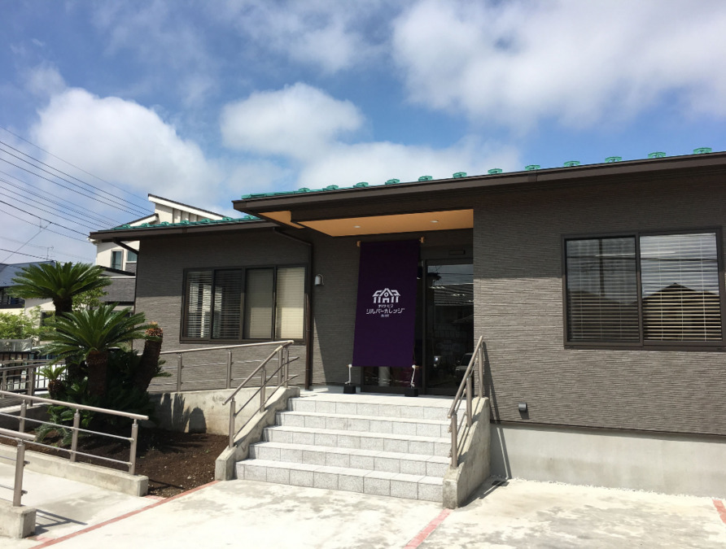
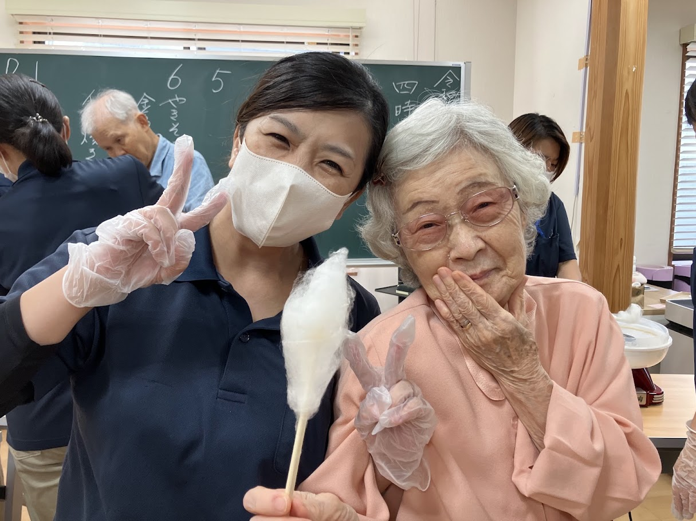
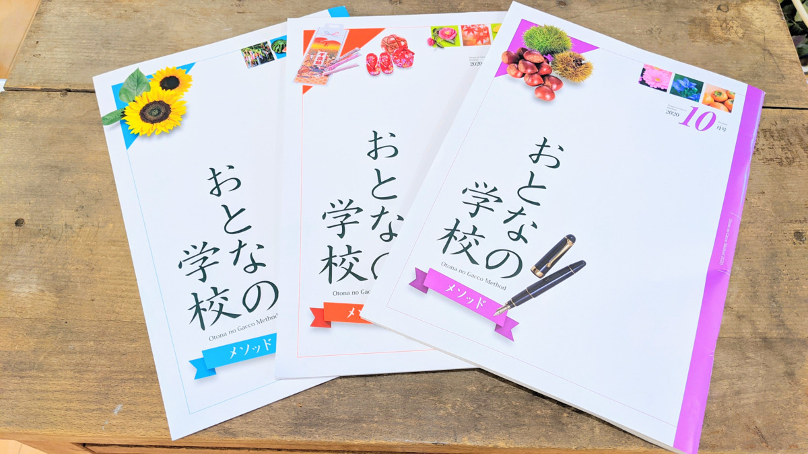
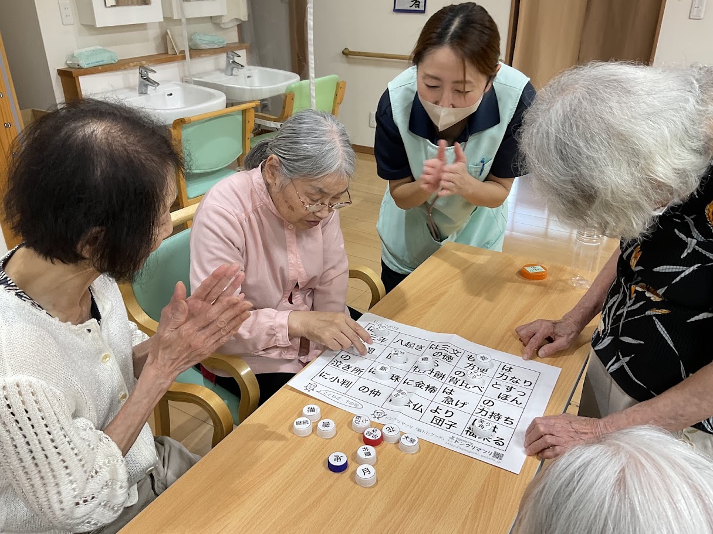
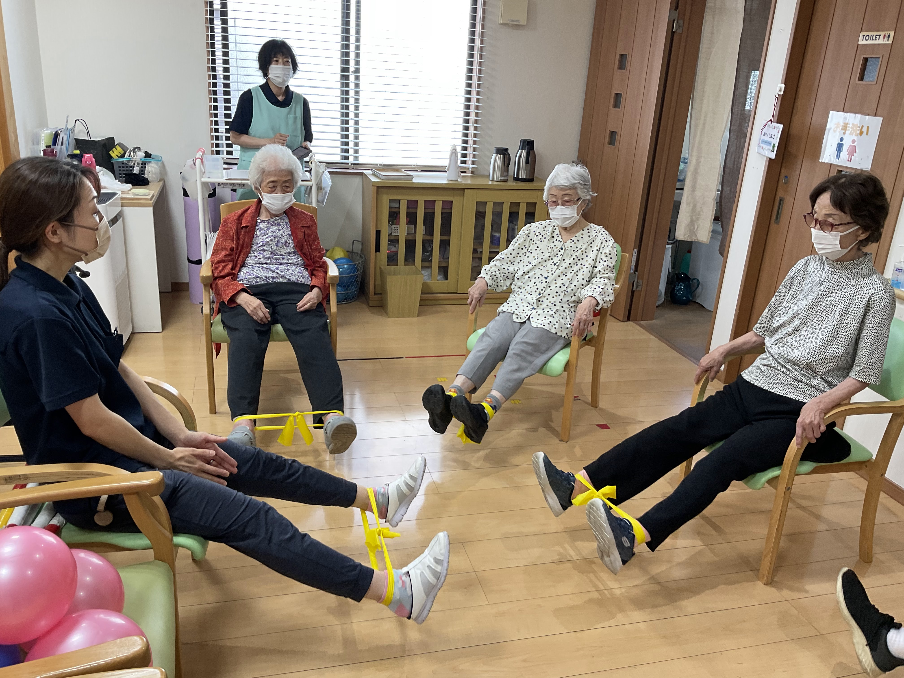
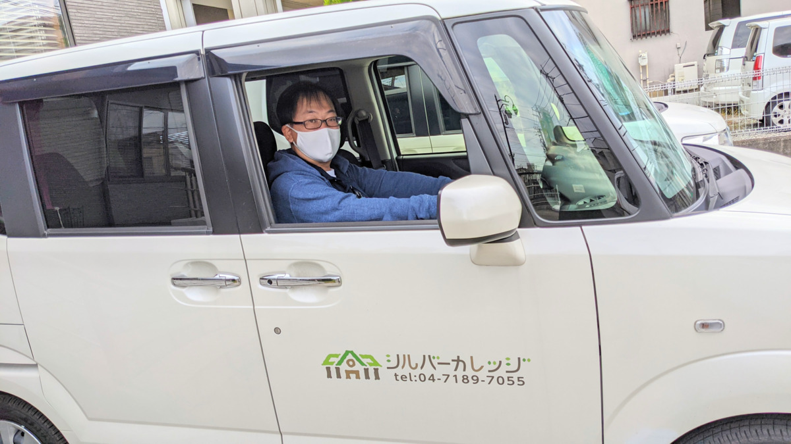
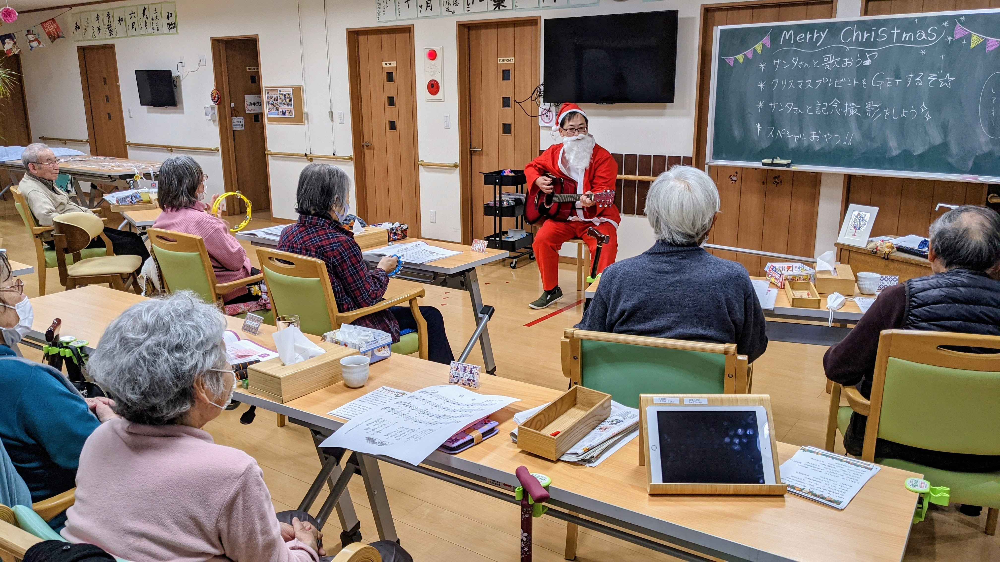
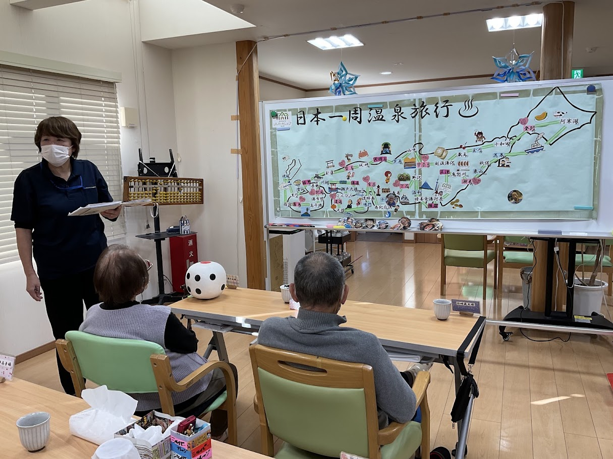
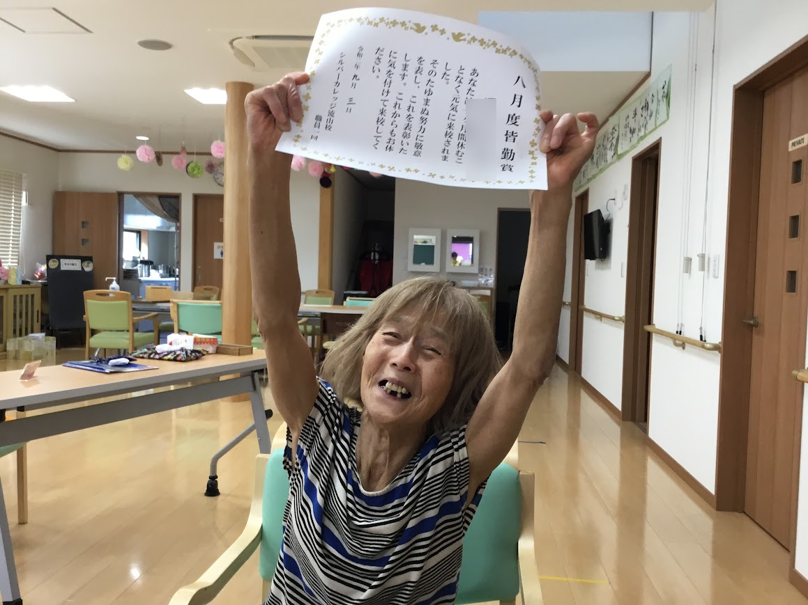
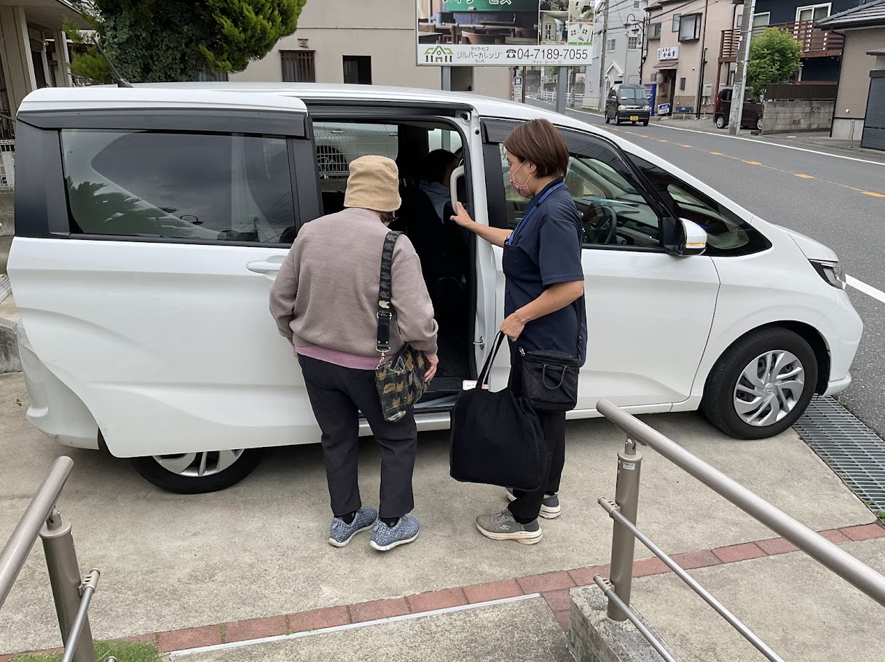

デイサービスシルバーカレッジ流山校は、想い出す力を鍛える認知機能訓練と、利用者さまの生活に沿った個別機能訓練を提供する「あたまとからだのデイサービス」です。昔懐かしい学校の雰囲気の中で、主体的に楽しく通っていただける環境を整えています。


チャイムが鳴り、日直の号令で始まる懐かしい授業風景。シルバーカレッジ流山校は、「行かされる場所」ではなく、利用者さま自らが「明日もまた通いたい」と思える生きがいと笑顔の場を目指しています。
おとなの学校メソッドによる回想法を通じ、眠っていた記憶や想い出がよみがえる喜び。仲間やスタッフと楽しく語り合い、からだを動かすことで、毎日の暮らしに活力と自信を取り戻すお手伝いをいたします。
自立した安心の在宅生活を支えるため、あたま（脳）とからだ（身体機能）の両面から温かくサポートいたします。
学校の楽しさと、医療・介護の安心が融合した新しい通所介護スタイルです。
教室に入ると目に入る昔懐かしい黒板とチョーク。チャイムが鳴り日直の号令で授業が始まると自然と背筋が伸び、仲間との会話や笑顔が生まれます。

国語・算数・理科・社会などを通じて回想法を行い脳を活性化。「できる・できない」にこだわらず、懐かしい思い出を語り合う楽しい授業です。

看護師・機能訓練指導員が常駐し、ご自宅での生活に沿った訓練を実施。リフト浴（機械浴）を備えており、ご自宅での浴槽またぎや入浴に課題がある方も安全にご利用いただけます。

とある日の一日の流れをご紹介します。
専用車両でご自宅までお迎えに伺います。到着後は看護師による血圧・体温・脈拍等のバイタルチェックを行い、温かいお茶でホッと一息ついていただきます。

チャイムとともに日直の号令で朝の会。「今日は何の日？」等の雑学レクや「おとなの学校」の教科書を使った授業を開始。並行して個別機能訓練やリフト浴による安心入浴も行います。
誤嚥を防ぐパタカラお口の体操を行った後、栄養バランスと彩りにこだわった美味しいお食事をご提供。食後はゆったりと休憩をお過ごしいただけます。

理科・社会・音楽やタブレットを使った認知機能訓練を実施。時にはお花見や紅葉など外出レクを行い、利用者さまに季節の移ろいを感じていただきます。

美味しいおやつと仲間やスタッフとの楽しい語らいのひととき。日直の号令で終わりの会を行い、一日を振り返ります。

専用車両でご自宅の玄関まで安全・確実にお送りいたします。ご家族様への当日のご様子のお伝えも行います。

見学や無料体験利用からサービス開始まで、スタッフが丁寧にご案内いたします。
「どんな雰囲気か見てみたい」「体験利用をしてみたい」など、まずはお気軽にご連絡ください。ご本人・ご家族はもちろん、担当ケアマネジャー様からのご相談も承っております。
ご自宅まで専用車で無料送迎いたします。実際の「おとなの学校」の授業やリフト浴、美味しい温かいお食事（昼食・おやつ）もすべて【完全無料】でご体験いただけます。
担当のケアマネジャー様と連携し、ご利用日数や送迎時間等の通所介護計画（ケアプラン）を作成します。※まだ介護保険証をお持ちでない場合は、申請代行も承ります。
スタッフがご自宅を訪問し、現在のお身体の状況、生活習慣、送迎時の注意点などを詳しくお伺いした上で、重要事項のご説明とご契約を行います。
初回ご利用日当日、スタッフが専用車でご自宅までお迎えに伺います。個別機能訓練やお食事、入浴など、ケアプランに基づいた安心の介護サービスをご提供いたします。
介護保険の自己負担分（1〜3割）に、実費負担分（お食事代・教材費）を合算した明朗会計です。
※所定時間「7時間以上8時間未満」、地域単価「1単位=10.27円（流山市・5級地）」にて算出。
| 要介護度 | 1割負担額 | 2割負担額 | 3割負担額 |
|---|---|---|---|
| 要介護 1 (658単位) | 675 円 | 1,351 円 | 2,027 円 |
| 要介護 2 (777単位) | 797 円 | 1,595 円 | 2,393 円 |
| 要介護 3 (900単位) | 924 円 | 1,848 円 | 2,772 円 |
| 要介護 4 (1,023単位) | 1,050 円 | 2,101 円 | 3,151 円 |
| 要介護 5 (1,148単位) | 1,178 円 | 2,357 円 | 3,536 円 |
| 要支援度 | 1割負担額 | 2割負担額 | 3割負担額 |
|---|---|---|---|
| 要支援 1 (1,798単位) | 1,846 円 / 月 | 3,693 円 / 月 | 5,539 円 / 月 |
| 要支援 2 (3,621単位) | 3,718 円 / 月 | 7,437 円 / 月 | 11,156 円 / 月 |
※ケアプラン（通所介護計画）に基づき、該当する場合に算定されます。
| 加算・減算項目（条件・回数） | 1割負担額 | 2割負担額 | 3割負担額 |
|---|---|---|---|
| 入浴介助加算（Ⅰ） (1回につき) | 41 円 | 82 円 | 123 円 |
| 入浴介助加算（Ⅱ） (1回につき) | 56 円 | 112 円 | 169 円 |
| 個別機能訓練加算（Ⅰ）イ (1回につき) | 57 円 | 115 円 | 172 円 |
| 個別機能訓練加算（Ⅰ）ロ (1回につき) | 78 円 | 156 円 | 234 円 |
| 個別機能訓練加算（Ⅱ） (1月に1回) | 20 円 | 41 円 | 61 円 |
| 科学的介護推進体制加算 (1月に1回) | 41 円 | 82 円 | 123 円 |
| サービス提供体制強化加算Ⅱ (要介護・1回につき) | 18 円 | 36 円 | 55 円 |
| サービス提供体制強化加算Ⅱ (要支援1・1月に1回) | 73 円 | 147 円 | 221 円 |
| サービス提供体制強化加算Ⅱ (要支援2・1月に1回) | 147 円 | 295 円 | 443 円 |
| 送迎減算（片道） (送迎を行わない場合) | -48 円 | -96 円 | -144 円 |
| 送迎減算（往復） (送迎を行わない場合) | -96 円 | -193 円 | -289 円 |
| 介護職員等処遇改善加算（Ⅰ）ロ | 1ヶ月の総利用料金（基本報酬＋各加算・減算）の 12.0% に相当する額 | ||
| お食事代（おやつ代込み） | 900 円 / 回 |
|---|---|
| レク・教材費（おとなの学校 教科書代等） | 3,000 円 / 月 |
| おやつ代のみ（食事なしの場合） | 150 円 / 回 |
| おむつ類 | リハビリパンツ：160円/個、パット：110円/個 |
| 通常の範囲を超えての送迎 | 1 km あたり 50 円 / 回 |
【キャンセル料について】
利用日前日の午後5時30分までにご連絡がない場合、キャンセル料（500円）をいただきます。当日直前または連絡なしキャンセルの場合は、食事代実費（850円）を合算してご負担いただきます（※急な体調不良・緊急入院等のやむを得ない場合は免責となります）。
| 事業所名 | デイサービス シルバーカレッジ流山校 |
|---|---|
| 介護保険指定番号 | 千葉県 指定第 1272501683 号 |
| サービス種別 | 通常規模型通所介護・介護予防通所介護 |
| 利用定員 | 25名 / 日 |
| 営業日 | 月曜日 〜 土曜日（祝日も休まず営業） ※日曜定休・年末年始（12月29日〜1月3日） |
| サービス提供時間 | 08:30 〜 16:30（営業時間 08:30〜17:30） |
| サービス提供地域 | 流山市・柏市・松戸市・野田市（その他応相談） |
| 食堂兼機能訓練室 | 110.3 ㎡ |
|---|---|
| 浴室設備 | 大浴室 20.87 ㎡、個浴室 6.62 ㎡ （リフト浴設備あり） |
| 静養室・相談室 | 静養室 9.93 ㎡、個別相談室 9.28 ㎡ |
| 専門スタッフ | 生活相談員、介護福祉士 常駐、看護師、理学療法士、機能訓練指導員 駐在 |
| 医療的ケア | 服薬管理、簡単な創傷処置、インスリン注射管理、在宅酸素療法など、一度ご相談ください。 |
シルバーカレッジ流山校のご利用に関してよくいただくご質問にお答えします。
はい、まったく心配いりません。点数を競うテストではなく「できる・できない」にこだわらない楽しい回想・会話のきっかけ作りが目的です。スタッフが優しく寄り添い、昔の思い出話などを交えて笑顔で楽しくご参加いただけます。
はい、無料体験利用・施設見学を随時大歓迎で受け付けております。ご自宅までの専用車送迎はもちろん、実際の授業体験や温かいお食事（昼食・おやつ）もすべて【完全無料】でご体験いただけますので、お気軽にご連絡ください。
はい、ご安心ください。シルバーカレッジ流山校では、浴槽の跨ぎ動作が難しい方でも無理なく安全に入浴できる「リフト浴（機械浴）」を完備しております。専門スタッフが丁寧にサポートいたしますので、自宅での入浴に課題がある方でも安心して温かいお風呂をお楽しみいただけます。
はい、看護師が常駐しておりますので、服薬管理、簡単な創傷処置、インスリン注射管理、在宅酸素療法など、主治医の指示書のもとで安全にご対応可能です。心身の状況に合わせて事前に詳しくご相談いただけます。
はい、お任せください。自社の居宅介護支援事業所「介護屋本舗」と連携し、流山市役所への新規要介護認定の申請手続き代行から、ケアプラン作成、デイサービス利用開始までワンストップで親身にサポートいたします。
「どんな雰囲気か見てみたい」「おとなの学校の授業を体験してみたい」など、無料体験利用や見学を大歓迎しております。専用車による無料送迎、温かいお食事（昼食・おやつ）もすべて完全無料でご体験いただけます。ご本人・ご家族はもちろん、担当ケアマネジャー様からのご相談もお気軽にお問い合わせください。